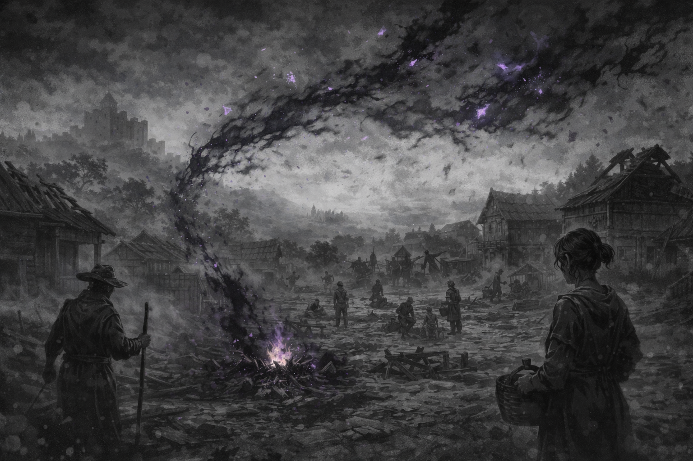
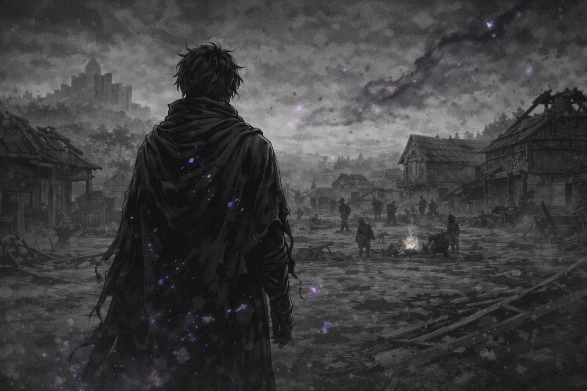
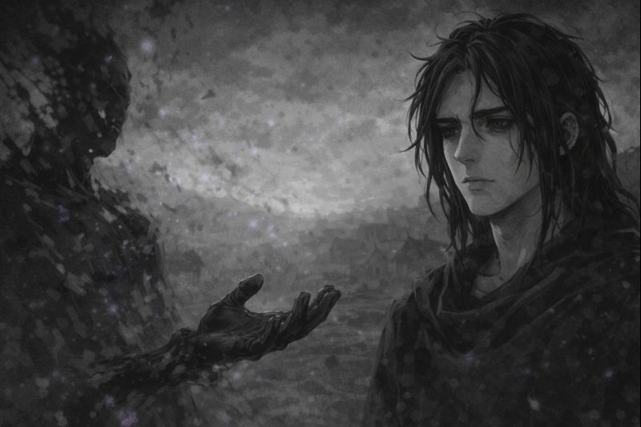
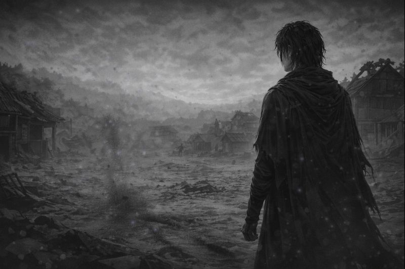
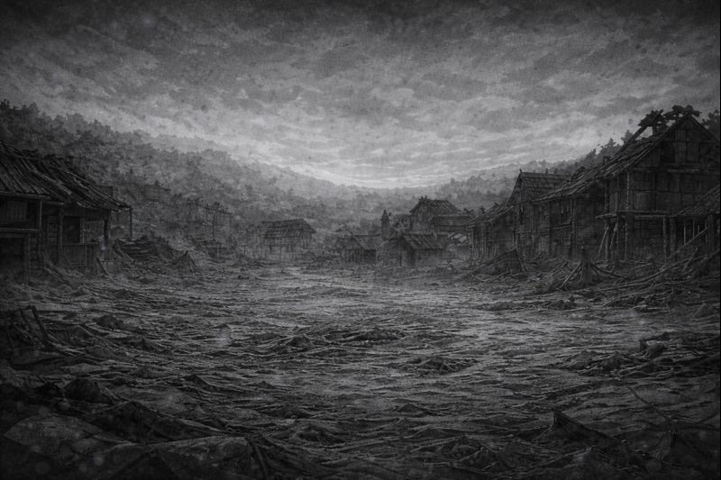
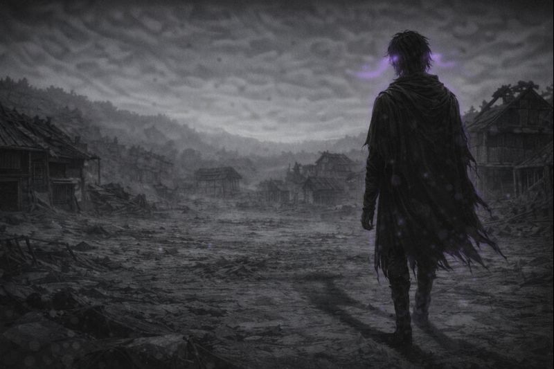

Eight fragments were given.
Eight wills were shaped.
And with every gift,
something was lost.

The world did not reject him.
It simply did not notice.
He had learned long ago
what it meant to remain.

There was nothing else to give.
Only what could not be carried
any longer.

The world did not change.
But it became heavier.

The task was complete.
And nothing remained
to witness it.

He did not look back.
There was nothing left
to return to.
And thus, the ninth was chosen —
not for what he was,
but for what he could contain.
✦ ✦ ✦